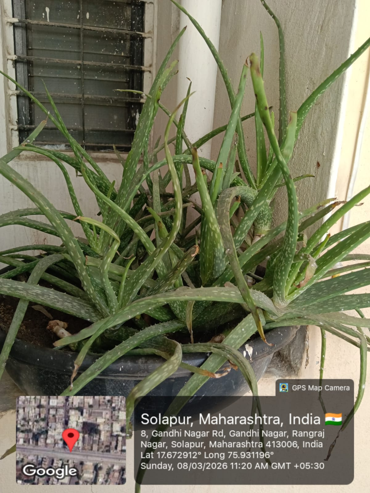

Aloe vera is a succulent medicinal plant known for its thick, fleshy leaves that contain a clear gel. The plant usually grows 60–100 cm tall and thrives in warm, dry climates. It is widely used in traditional and modern medicine because of its healing, anti-inflammatory, antioxidant, antimicrobial, and anticancer properties.
The gel inside the leaves is rich in vitamins, enzymes, amino acids, and bioactive compounds that contribute to its remarkable medicinal value, making it one of the most commercially important plants in the world.
Aloe vera has been used for more than 2000 years in traditional medicine. Ancient civilisations such as the Egyptians, Greeks, Romans, and Indians used Aloe vera for healing wounds and treating skin problems. It was often called the "Plant of Immortality" in ancient Egypt.
In Ayurveda and traditional Indian medicine, Aloe vera has been used to treat skin disorders, digestive problems, and infections — a practice that continues to be validated by modern scientific research.
Aloe vera is believed to have originated in the Arabian Peninsula. Today it is widely cultivated in India, Africa, the Mediterranean region, and tropical and subtropical areas around the world. The plant grows well in dry climates and sandy soils, and is commonly grown in gardens and farms for medicinal and commercial purposes.
The main parts of Aloe vera used in oral cancer research include:
Key bioactive compounds include aloins, aloe-emodin, acemannan, and anthraquinones, all of which show potential anticancer activity against oral cancer cell lines.
Aloe vera is considered one of the most important medicinal plants worldwide because of its healing properties and wide range of therapeutic uses.
| Scientific Name | Common Name | Plant Part | Phytochemical Class | Compound | Activity | PubChem ID |
|---|---|---|---|---|---|---|
| Aloe vera | True Aloe | Yellow latex layer | Anthraquinone | Aloe-emodin |
Apoptosis induction
Inhibits cell proliferation
|
10207 |
| Aloe vera | True Aloe | Clear inner gel | Polysaccharide | Acemannan |
Immunomodulatory
Anti-tumor
|
134129847 |
| Aloe vera | True Aloe | Leaves | Flavonoid | Beta-carotene |
Anticancer
|
5280489 |
| Aloe vera | True Aloe | Leaves | Flavonoid | Quercetin |
Anticancer
|
5280343 |